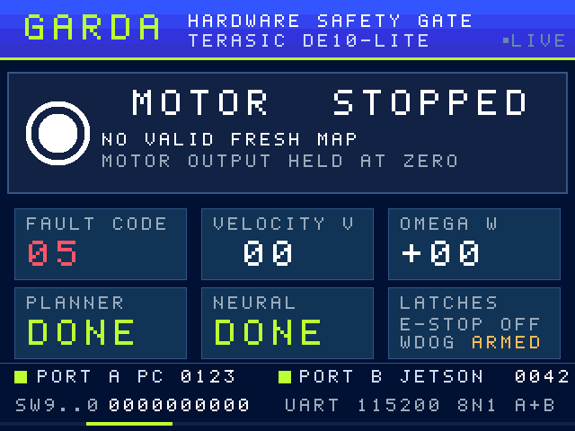

FPGA status
- BOARD DISCONNECTED
- USB-BLASTER DETECTED
- READY TO PROGRAM
- PROGRAMMING
- PROGRAMMING SUCCESSFUL
- PROGRAMMING FAILED

Hardware safety gate · DE10-Lite MAX 10
Connect the UART or pick a data source.
Hover a pin for details.
7-segment · fault | last fault | frames
LEDR9 … LEDR0
SW9 … SW0 · KEY1 KEY0

Plug a monitor into the DE10-Lite VGA port. The FPGA draws this screen itself from the live safety-gate signals. The picture here is the RTL-rendered frame for the current state.
GARDA · Judge demo